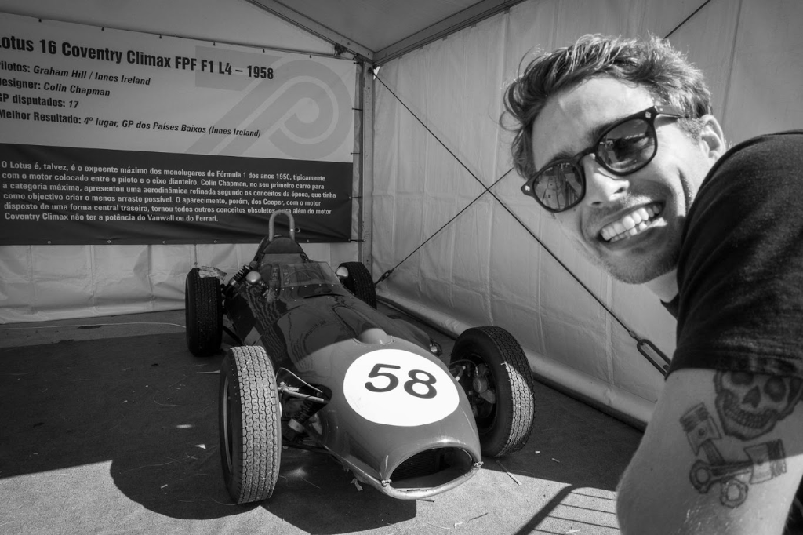
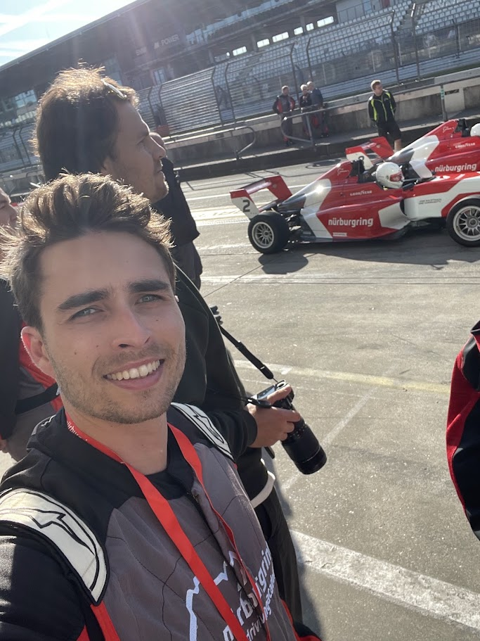
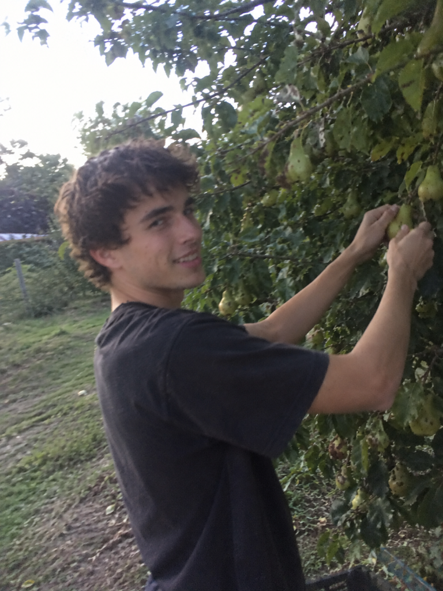
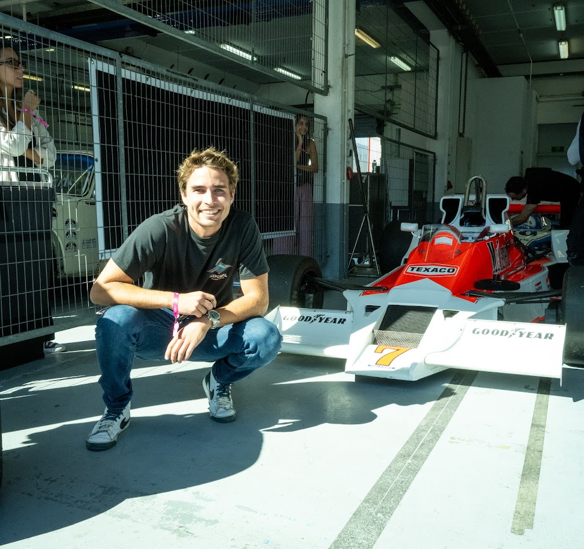
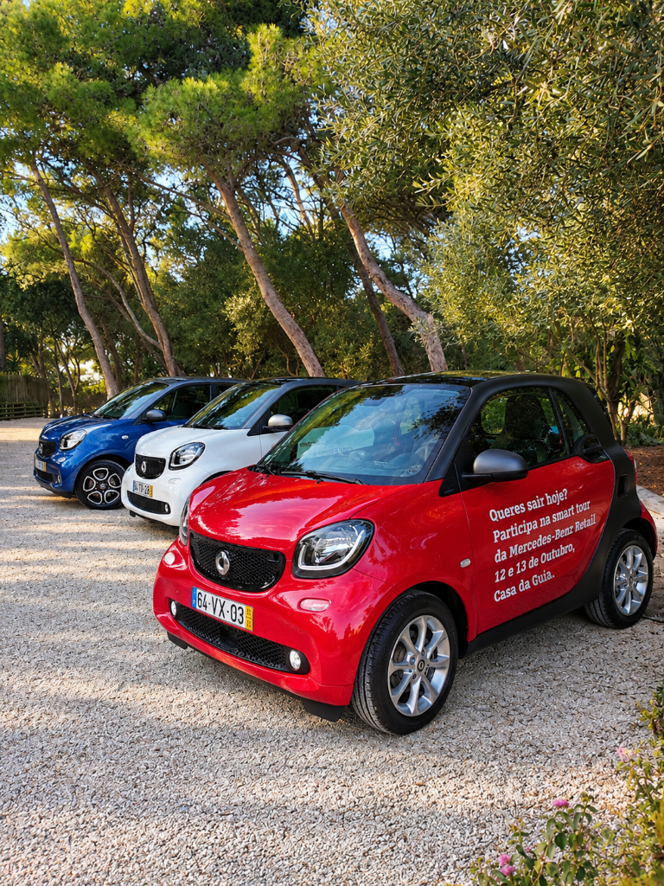
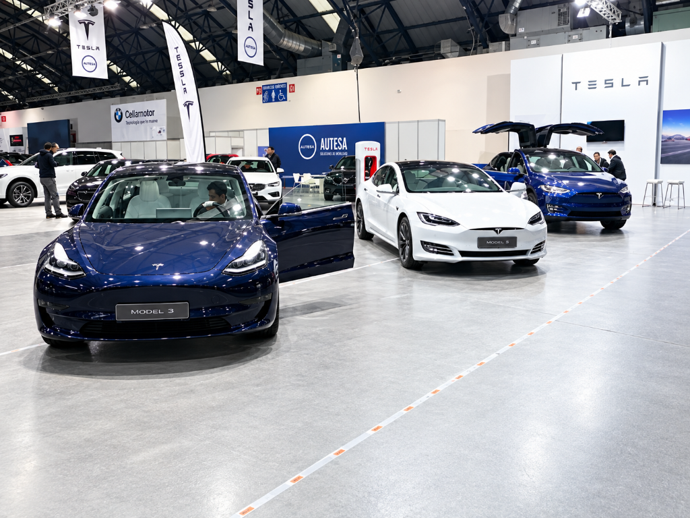
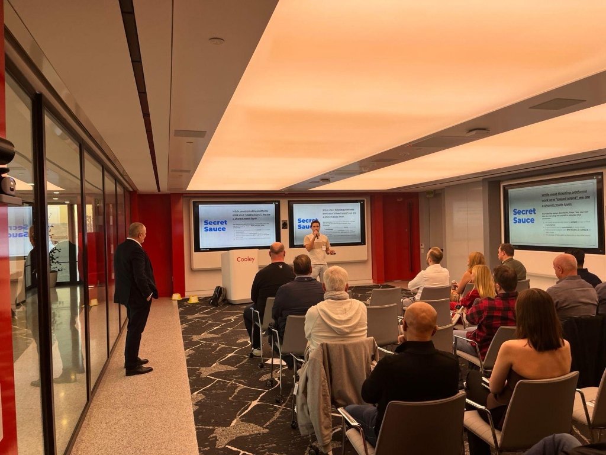
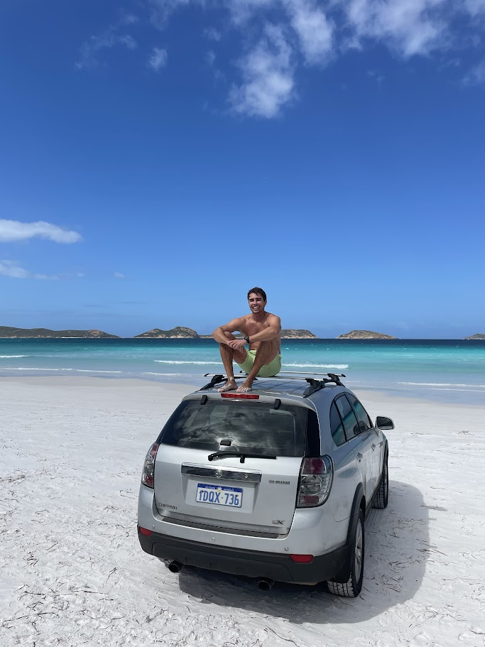
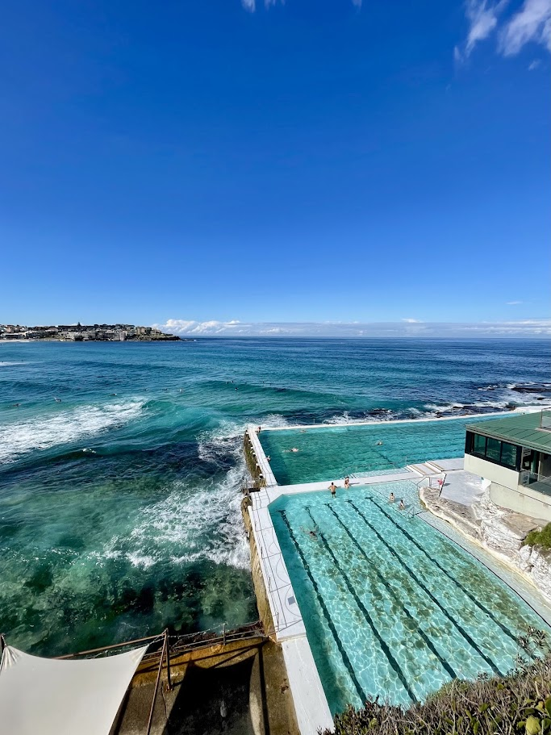
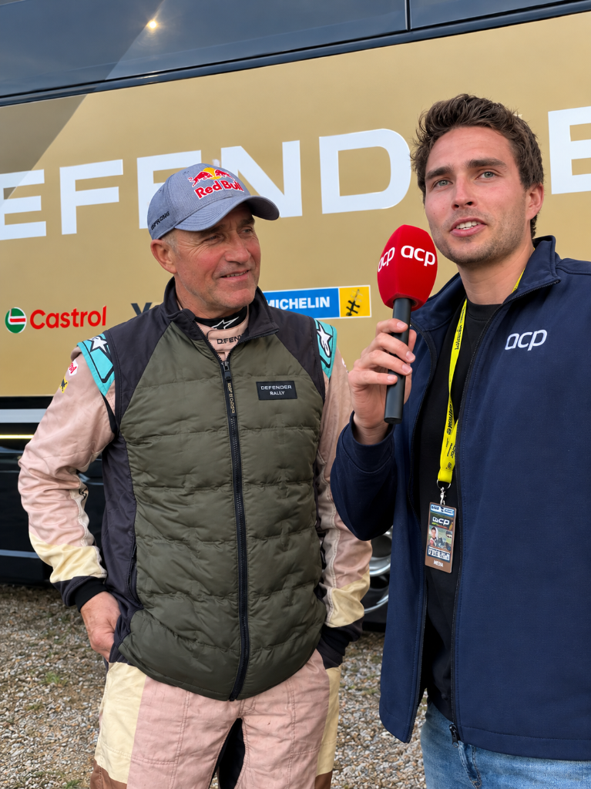

Put your seatbelt on, my life's been a wild ride.


I'm a marketing professional who somehow got emotionally invested in motorsport.
So it all started with the obvious things: loud engines, the smell of fuel, my father being a complete Porsche freak (that we sadly never owned)...
But, as time went by, I realized that what really fascinated me wasn't only what happened when the lights went out. It was everything that had to happen before they did.
Years on, I've found myself juggling brand management, sponsorships, media, suppliers, event logistics, five spreadsheets and one increasingly stressed walkie-talkie on the race control - sometimes all at the same time.
And that is probably what I like most about motorsport: the fact that, from the outside, everything is supposed to look simple. The cars line up. The lights go out. And the race begins.
Behind the scenes, however, there is usually a completely different story.
I've worked across marketing, communications, events, sponsorships and entrepreneurship, and although the industries and job titles have changed, there has always been a common denominator: making things happen when there are a lot of moving parts involved.
In need of a break, I decided to take a stand-up comedy course - either a very good life decision or an unnecessarily expensive way of learning humility. There is a Youtube video and... I'm not proud of it!
It turns out, though, that comedy and marketing have quite a lot in common. Know your audience. Tell a good story. Build some anticipation. And, most importantly, know when to stop talking!
So, to shut myself up, this is not a portfolio about claiming that I have all the answers. It's a portfolio about the things I've done so far, the things I've learned along the way, and the type of work I would like to keep doing.
Preferably somewhere near a racetrack.
My story doesn't start in a paddock. It actually starts in an orchard, at an age when I had absolutely no idea what a "career trajectory" was.
My first job was picking pears in a small village in Portugal at quite a (and probably illegal) young age.
Then came a warehouse job at Zara, which also gave me a few headaches.
Picking pears wasn't exactly my idea of a good time. Zara was only marginally better. Somewhere along the way, I realized it was probably time to start focusing on work that actually motivated me.
And, as it turned out, anything involving a bit of rubber and a gearbox did.

The Turning Point.
The jobs changed over the years, but the hustle never really did. The orchard, the warehouse floor, and every summer job taught me to chase things down, figure things out, and just get on with it. Looking back, I guess that same hustle was always going somewhere. Eventually, it just found a track to run on.

Four chapters so far. Four different companies, a few career plot twists, and enough moving parts to keep things interesting.
The point where marketing stopped being something I studied and became something that would pay off my bills. I worked on events and marketing activities for Mercedes-Benz and Smart, while also helping strengthen the dealership's presence across social media.

When things started moving a lot faster. In 2020, I worked for Tesla, supporting marketing, communications, PR, and event execution. I helped organize the Portuguese Tesla Summer Tour, coordinated communications with national media, and supported the logistics of an event that took place across 12 different locations.

Then I decided that working for someone else was apparently not complicated enough. Outwire was the entrepreneurial chapter. We started with an idea and had to figure out pretty much everything that came afterwards: product, team, funding, market research, technology, customers and eventually how to convince people that the idea was worth building. The company developed a Web3-based ticketing platform, giving fans ownership of their tickets and building the technology and token model behind it.
Nothing beats the feeling of seeing your idea become an actual product people could download. Unbeatable.

Then, after five years of building a company, I decided to do something completely different.
→ off the highway, taking the scenic route
At some point, I decided that moving to Australia for eight months on a working holiday visa was probably a good idea.
I didn't go there with a job waiting for me, a five-year plan or much of an idea of what I was actually going to do. The appeal of a working holiday visa is also its biggest challenge: you are there to travel, but you still need to pay for it. Which meant finding work… Any work!
So I had to be willing to do pretty much whatever came my way. Uber Eats through Sydney. Construction sites at 6am in Perth. Retail at a barbecue store in Melbourne. You name it, I probably did it.
None of it was particularly glamorous, but that was never really the point. Being on the other side of the world, without the usual safety net, meant figuring things out as I went. If I needed money, I'd find a job. If that job disappeared, I'd find another. If I didn't know how something worked, I'd ask (or, more likely, watch a YouTube tutorial). If I didn't know anyone, well… let's go to a bar.


And then there was the wildlife.
Australia has a very particular way of reminding you that you are not at the top of the food chain. I saw animals I had previously only seen in documentaries, and heard noises at 4am that no European should ever have to hear. I'm still not entirely sure what some of them were, and honestly, I'm not sure I want to know.
Looking back, those eight months weren't part of some carefully planned career development strategy. They were simply eight months of making things work.
And, eventually, the story came full circle.
After spending years watching motorsport from the other side of the barriers, I now get to work on the events themselves. I'm part of the team behind the WRC Vodafone Rally de Portugal, while also working across Rally Raid events competing under the W2RC championship. My work sits somewhere between events, operations and sponsorships - which means that, depending on the day, I might be coordinating logistics, speaking with suppliers or trying to turn a potential sponsor into an actual partner.
After all these years, the little boy who became obsessed with anything fast and engine-related eventually found himself working in the paddock. Not a bad outcome.
I've never really had a single box to put my work into. Marketing has taken me into events. Events have taken me into sponsorships. Entrepreneurship forced me into product, sales and strategy. So this is probably a better representation of what I actually do.
When the chaos becomes the norm.
Finding the connection between a brand, an audience and a reason for both to care.
Understanding who you're speaking to, what you're trying to say and where that conversation should happen.
The miraculous tools when the deadline was yesterday.
Well, the practical experience was backed by a few classrooms.
Seven years of marketing. A few different industries. One startup. A lot of events.
I'm still learning, still building partnerships, still solving problems and still discovering that no matter how detailed the plan is, something will eventually go wrong. That's probably alright. If the job involves a paddock, a stopwatch, a sponsorship, an event - or simply a spreadsheet you're slightly afraid to open - I'm on it!
